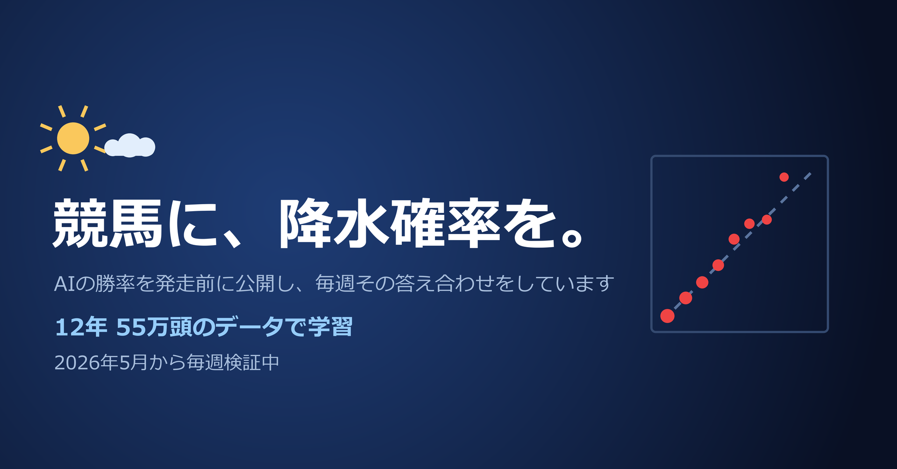

881レース・11,860頭で検証した結果です。 「30%」と予報した馬は実際に35%勝ちました。 すべて発走前に計算・公開し、良い結果だけを選ぶことがないよう予測をその時点で保存しています。
※「正確」とは、予報した確率どおりの割合で実際に起きているという意味です。 儲かることを保証するものではありません（この予報どおりに買っても、控除率のぶん回収率は100%を下回ります）。
「勝率20〜30%と予報した馬は、本当にそのとおり勝ったのか」を帯ごとに並べています。 検定に用いた8帯すべてで、予報した値が実際の結果の95%信頼区間に収まりました。 較正の適合度検定（Hosmer-Lemeshow）でも p=0.77 で、 統計的に「予報と実績にズレがある」とは言えない結果です。 （下の表は読みやすさのため、頭数の少ない上位帯をまとめて6行で表示しています）
| 予報した勝率 | 頭数 | 予報 | 結果 | 差 |
|---|---|---|---|---|
| 0〜10% | 9,048 | 2.9% | 2.9% | -0.0pt |
| 10〜20% | 1,569 | 14.2% | 13.9% | -0.3pt |
| 20〜30% | 684 | 24.4% | 24.1% | -0.3pt |
| 30〜40% | 335 | 34.4% | 34.9% | +0.6pt |
| 40〜50% | 128 | 43.9% | 50.0% | +6.1pt |
| 50%以上 | 96 | 59.8% | 62.5% | +2.7pt |
＊の付いた行は頭数が少なく、数字がブレやすいので参考程度に見てください。 それでも40%を超える帯（計224頭）は一貫して結果が予報をやや上回っており、 「自信のある馬でも言い切らない」という予報の傾向がここにも表れています。
各レースで最も勝率が高いと判断した馬（◎）の成績です。
| 項目 | 値 |
|---|---|
| 対象レース | 881 |
| 予報の平均勝率 | 34.3% |
| 実際の勝率 | 36.3% |
| 実際の複勝率 | 66.1% |
「勝率30%」は、同じ予測を100回出したら30回前後勝つという意味です。 天気予報の降水確率と同じ読み方をします。
数字は2026/5/17以降のもので、 取消・除外で予測の配分が崩れた12レースは集計から除いています。